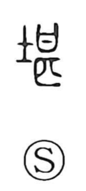

堪

Kun: taeru | On: kan, tan
to endure ・ to withstand ・ worthy ・ to excel
Explanation
Shirakawa reads 堪 as a phono‑semantic graph built on the phonetic 甚, which originally sketched a pot set upon a cooking hearth (an okikamado). That same phonetic appears in related graphs such as 勘. With the addition of the ground/earth element, 堪 depicts a hearth dug into the earth, the kind used to fire ceramics. From the image of vessels withstanding intense heat, the character came to mean to endure or bear, and by extension to be fit or worthy for something, even to excel or surpass.